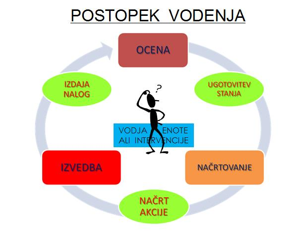
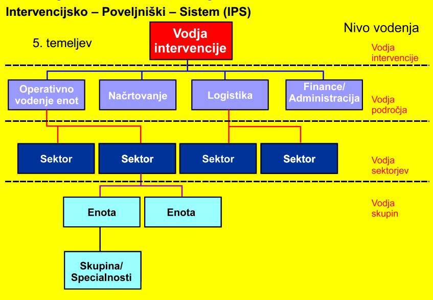

Vsaka intervencija je povezana tudi z odgovorno osebo. Odgovorno osebo imenujemo vodja intervencije, kateri pa lahko vodi različno število gasilcev. Ko govorimo o najmanjšem številu moštva v gasilskih enotah govorimo o formacijah, katere imajo določeno število gasilcev:
- gasilska skupina ima vodjo in dva ali enega gasilca
- gasilski oddelek ima poveljnika in pet oziroma štiri ali osem gasilcev
- gasilski vod ima poveljnika in dvanajst oziroma osemnajst gasilcev
- gasilska četa ima poveljnika in šestindvajset gasilcev
- gasilski bataljon ima poveljnika in dvainpetdeset gasilcev
- gasilska brigada ima poveljnika in sto dvaindvajset gasilcev
Vsak vodja intervencije potrebuje informacije na podlagi katerih se bo odločal za naloge katere bo potrebno opraviti. Krog vodenja poteka po vrstnem redu:
OCENA - ugotovitve stanja na, med in po požaru
NAČRTOVANJE – načrt dela, moštva, napredovanja požara, aktiviranja
IZVEDBA – izdaja nalog in povelja podrejenim načrtovanja
Povelja in njihovo izpolnjevanje so obvezujoča za vse gasilce, ki so na intervenciji. Gasilec je dolžan poslušati samo povelja svojega neposredno predpostavljenega. V kolikor določene naloge ni mogoče opraviti je gasilec kateremu je bilo izdano povelje dolžan sporočiti nezmožnost opravljanja dane naloge.
Gasilski poveljniki poveljuje in izdaja povelja z izdajanjem ukazov in povelj. Ukaz se izda taktični enoti velikosti voda in višjim taktičnim enotam. Izvajanje ukaza v taktični enoti se zagotovi z izdajanjem povelj. Ukaz vodu in višjim taktičnim sestavam se izda pisno ali ustno. Povelje se izda ustno.

Podrejeni lahko zahteva od nadrejenega dodatna pojasnila in usmeritve, da bi lahko razumel in izvršil prejeti ukaz ali povelje. Podrejeni zoper prejeti ukaz ali povelje lahko ugovarja oziroma v skladu z Zakonom o gasilstvu odkloni njegovo izvršitev le, če ni usposobljen niti opremljen za izvedbo ukazane naloge, če bi s tem storil kaznivo dejanje, oz. mu je naložena naloga za katero ni usposobljen niti opremljen in je s tem neposredno ogroženo njegovo življenje.
Vodja intervencije si za pomočnike lahko postavi gasilce, kateri se bodo ukvarjali z določenimi specifičnimi področji: vodenje operativnih enot, vodenje področja logistike, vodenje administracije in financ, vodenje načrtovanja in drugo.

Pri večjih intervencijah pa si vsak vodja posameznega področja izbere še dodatne pomočnike po potrebi, vsi skupaj pa sestavljajo tako imenovan štab. Za pomoč pri štabnem vodenju si lahko pomagamo z obrazci in načinom vodenja, katerega opredeljuje sistem IPS – intervencijsko poveljniški sistem.